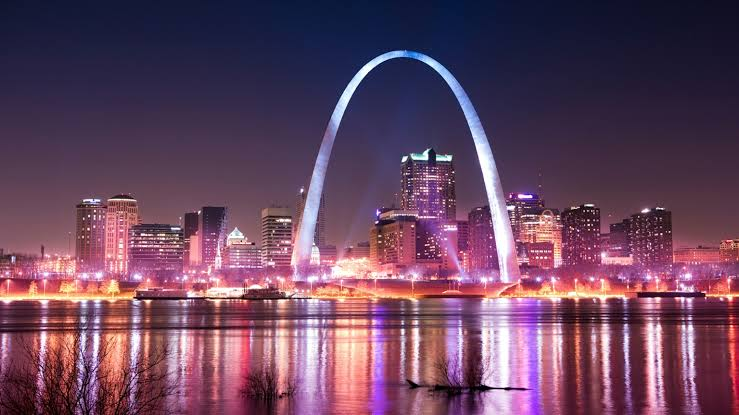

Der Staat Missouri ist ein US-Bundesstaat des Mittleren Westens der Vereinigten Staaten.
Die Hauptstadt ist Jefferson City. Die gewöhnliche Abkürzung des Staates ist MO. Missouri wurde nach dem Fluss Missouri benannt, der wiederum seinen Namen vom indianischen
Volk der Missouri hat. Das Wort Missouri stammt von deren Nachbarn, dem Volk der Illinois, die sie wi-mihs-oor-i-t-a nennen, was „die mit den Holz-Kanus“ bedeutet.[2]
Die staatlichen Hochschulen University of Missouri und Missouri State University befinden sich in den Städten Columbia und Springfield. Sowohl der Mississippi als auch
der Missouri durchfließen den Staat.
Quellen- und Lizenzhinweis:
Dieser Text basiert auf dem Wikipedia-Artikel
Missouri
(geänderte Fassung) und steht unter der Lizenz
Creative Commons Attribution-ShareAlike 4.0 International (CC BY-SA 4.0).
Das Bild ist von
National Geographic Kids